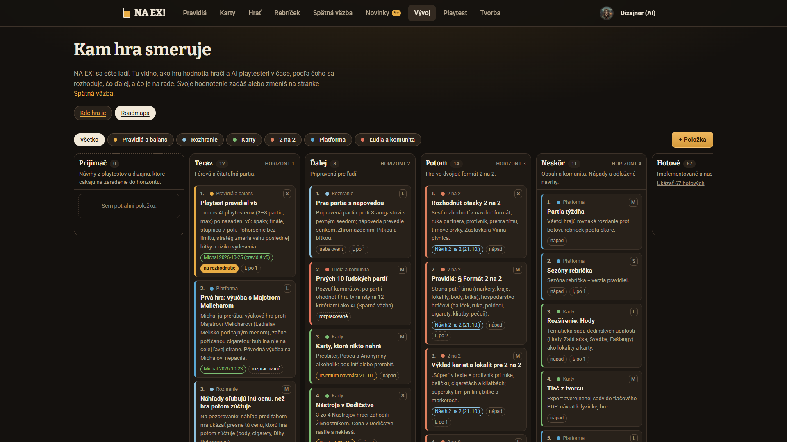
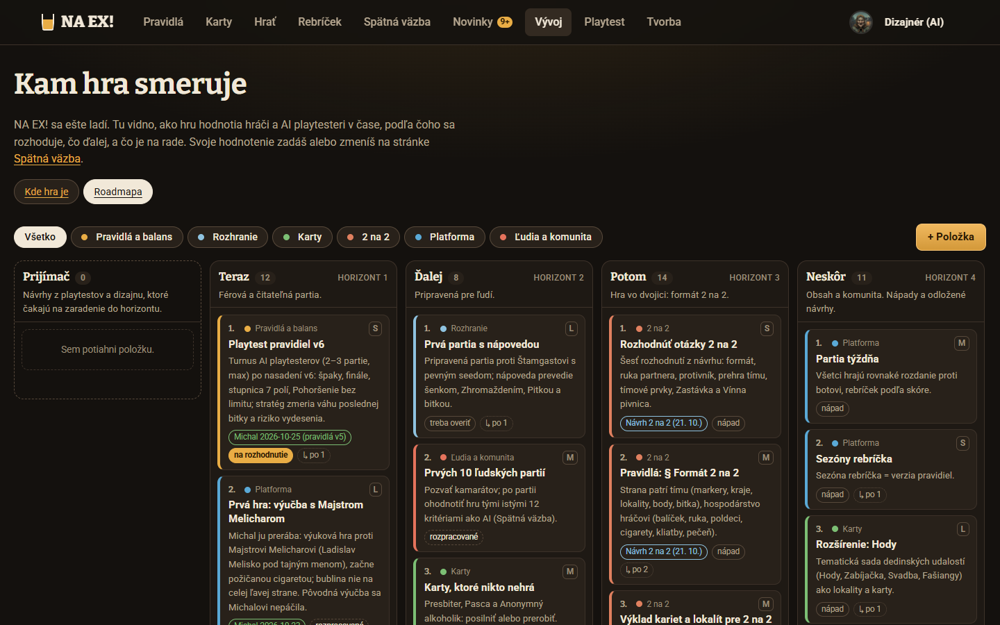
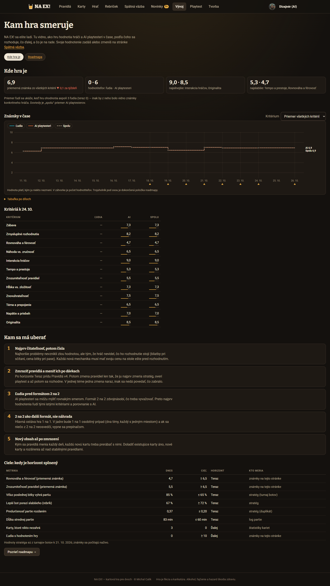
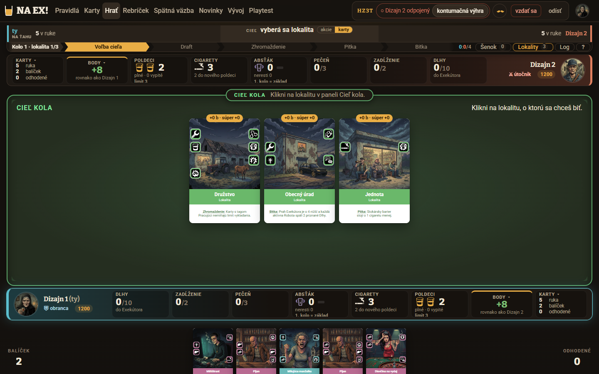
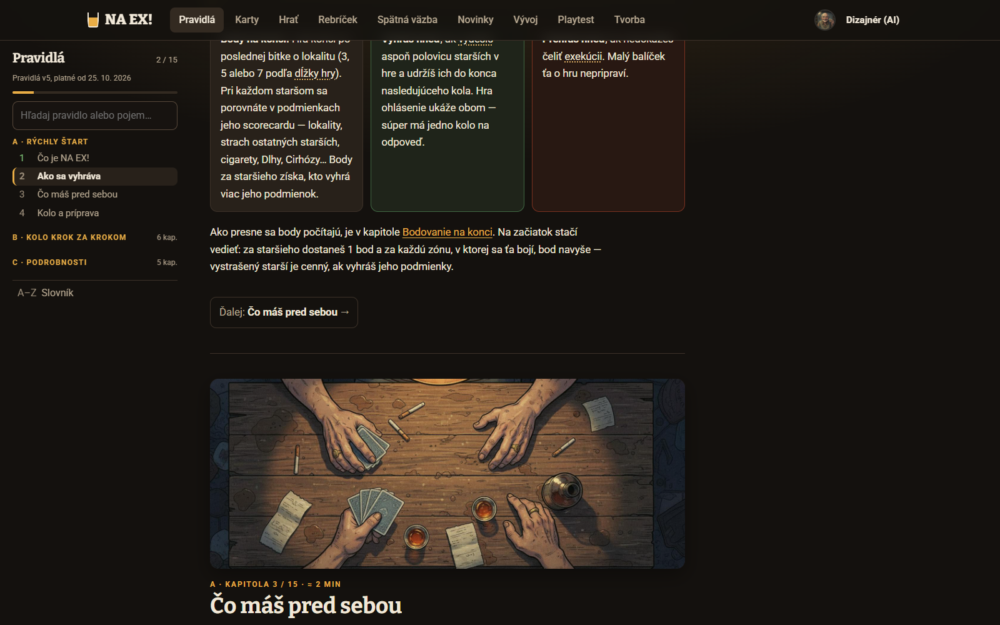
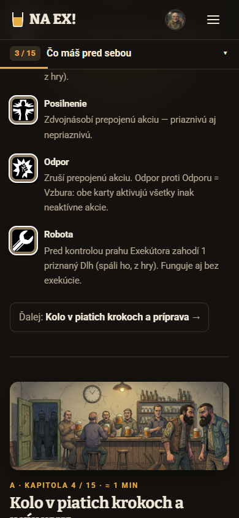
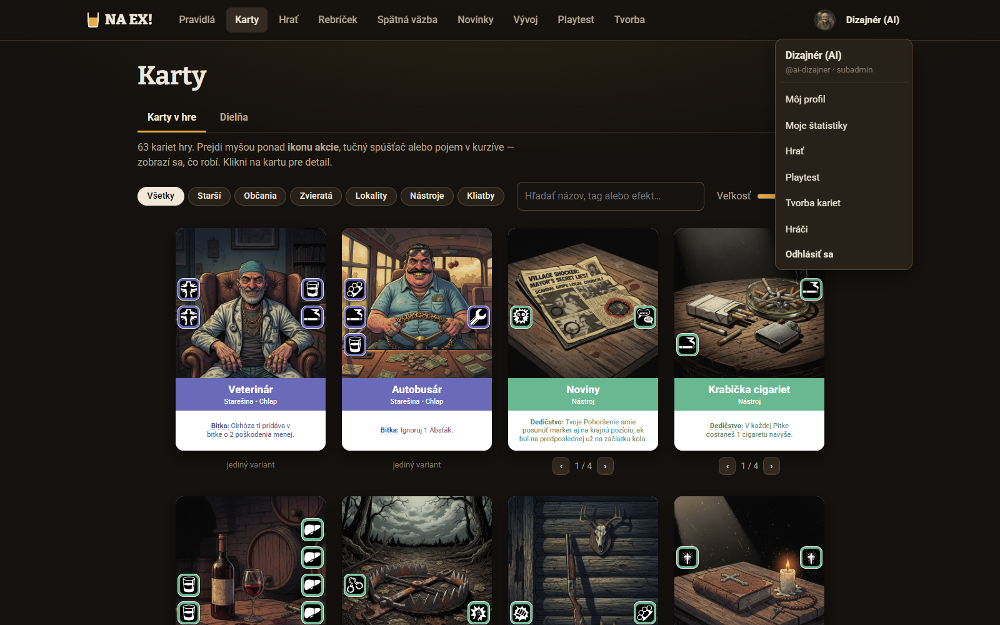
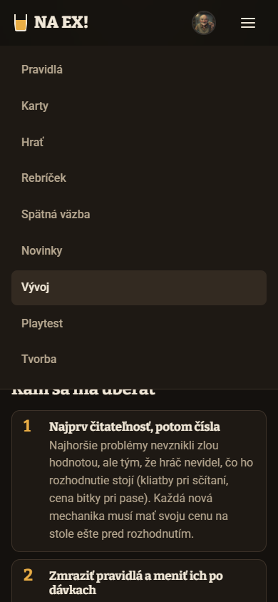

UX návrh · id vyvoj-web-20261026-1520 · 26. 10. 2026 · UX dizajnér (AI) · vzhľad rieši
UI návrh tej istej úlohy
Vývoj a roadmapa na jednej stránke, prehľadná navigácia a jedna hlavička v hre aj mimo nej
Cieľ:/vyvoj a /vyvoj/roadmapa zlúčiť do jednej prehľadnej stránky; k tomu informačná architektúra webu,
navigácia a hlavička v partii a mimo nej. Doplnok od Michala: tlačidlá „Ďalej“ v Pravidlách.
Pri hlavičke v hre počítam s pravidlami v6 „Špaky“ (krčmová nástenka, popolník pri mene hráča).
„Nepáči sa mi, že veľmi podstatné dáta sa skrývajú za takýmto malým buttonom… Taktiež roadmapa je odseknutá, nevidno to celé… mohla by využívať lepšie celú šírku monitora, teraz je napríklad počas hry vrchný panel iný ako mimo hry…“Michal, 26. 10. 2026
„Taktiež tieto tlačidlá pri pravidlách sú nezmysel, keďže sú scrollovateľné a tá sekcia ‚ďalej‘ je pár pixelov pod tlačidlom… prerobiť.“Michal, 26. 10. 2026
Kto sem chodí a čo tu chce
Hráč a návštevník na Vývoji Žije hra a zlepšuje sa? Čo sa chystá a kedy príde to, čo ho trápi? Čo sa naposledy zmenilo? Ako môže pomôcť (ohodnotiť hru)?
Michal (admin) na Vývoji Čo je na rade (Teraz zhora), čo čaká na jeho rozhodnutie (Prijímač, štítok „na rozhodnutie“), presúvanie priorít, či známky po zmenách rastú.
Hráč počas partie Čí je ťah a v akej fáze sme, kto je súper a či je pripojený, odbehnúť si do Pravidiel alebo Kariet a vrátiť sa skôr, ako súper môže žiadať kontumáciu.
Čitateľ Pravidiel Čítať od začiatku, vedieť, kde je, a skočiť na kapitolu, ktorú potrebuje.
Verdikt
Vývoj a Roadmapa odpovedajú na jednu otázku: kde hra je a kam ide. Delí ich malý čip, ktorý vyzerá ako filter.
Roadmapa v kontajneri 1600 px s minimálnou šírkou stĺpca 270 px sa Michalovi ako adminovi neodreže len na monitore širšom ako ≈ 1730 px.
Na 1920 px je orezaný stĺpec Hotové so 67 položkami, pritom práve ten je najlepší dôkaz, že sa na hre robí. Celý web má tri šírky
obsahu a hlavička mimo hry inú ako v hre. Odporúčam: jednu stránku Vývoj s lepkavými kotvami a roadmapou na celú šírku okna;
Hotové ako pás pod tabuľou, nie ako piaty stĺpec. Ďalej jednu kostru hlavičky s miestom na partiu (v hre stav partie, mimo nej
„Partia beží · Späť ku stolu“). V Pravidlách zrušiť tlačidlá „Ďalej“ a v bočnom obsahu ukázať všetky kapitoly.
1. Toky dnes
T1 — Hráč: „Čo sa na hre chystá a čo už je hotové?“
Dnes, 4–6 krokov, dve slepé uličky
Menu → Vývoj (7. z 9 položiek).
Stránka „Kam hra smeruje“ otvorí známky („Kde hra je“).
Na roadmapu vedie čip Roadmapa pod úvodom. Vyzerá ako filter, nie ako polovica stránky. Druhá cesta je tlačidlo „Pozrieť roadmapu →“ úplne dole, ≈ 2 800 px pod začiatkom.
Roadmapa: na 1440 px okne admin vidí 4,5 stĺpca, hráč pod ≈ 1 440 px tiež nie všetky.
Hotové: posuvník do strany je až pod tabuľou, ktorej stĺpec „Potom“ má ≈ 2 000 px. Na myši bez vodorovného kolieska treba zrolovať na koniec.
Stĺpec Hotové je navyše zbalený („Ukázať 67 hotových“), takže treba ešte jeden klik.
Cieľ, 1–2 kroky
Menu → Vývoj.
Hore vidno súhrn (známka, čo sa robí, čo je naposledy hotové), pod ním celú roadmapu bez posúvania do strany a pod ňou Hotové. Lepkavá lišta kotiev skočí na každú časť.

Živý web, 1920 × 1080, správca: Hotové (67) je odrezané na pravom okraji. Logo je na x ≈ 300 px, nadpis na x ≈ 180 px.

1440 × 900, správca: prázdny Prijímač (0) zaberie celý stĺpec a Hotové nie je vôbec vidno. Prepínač „Kde hra je / Roadmapa“ je malý čip pod úvodom.

Vývoj, živý web, 1600 px, celá stránka: tabuľka kritérií má ≈ 550 px a vedľa nej ostáva ≈ 1 000 px prázdnych. Zásady hovoria „Po horizonte Teraz prídu Pravidlá v4“, živé sú v5 a prichádza v6.
T2 — Michal: „Čo mám rozhodnúť a čo je na rade?“
Dnes
Vývoj → čip Roadmapa.
Prijímač vľavo zaberá stĺpec, aj keď je prázdny.
Položky „na rozhodnutie“ sú rozhodené po stĺpcoch. Filter je len podľa oblasti, podľa stavu nie (Roadmapa.tsx:524-540).
Či je horizont „Teraz“ splnený, ukazuje tabuľka cieľov na druhej záložke (Vyvoj.tsx:48-57, 204-230).
Cieľ
Vývoj → Roadmapa (kotva). V hlavičke tabule je „Na rozhodnutie 2“ ako prepínač.
Prijímač je pás nad tabuľou, len keď v ňom niečo je.
Ciele horizontu sú v hlavičke stĺpca: „Rovnováha 4,7 → 6,5“.
T3 — Hráč v partii si chce pozrieť pravidlo a vrátiť sa
Dnes, 4 kroky a nič mu nepripomenie partiu
Klik na Pravidlá v hlavičke → dialóg „Odísť z partie?“ (Layout.tsx:80-147) → Odísť.
Pravidlá: hlavička je užšia, menu vyzerá inak a o partii nikde nič.
Dialóg pritom hovorí: „po 3 minútach bez teba si môže vyžiadať kontumačnú výhru“ (Layout.tsx:127).
Späť: hráč si musí pamätať, že sa vráti cez „Hrať“ alebo kódom miestnosti.
Cieľ
Pravidlá v novej karte (stredný klik už funguje), alebo odchod s dialógom ako dnes.
Na každej stránke je v hlavičke na tom istom mieste „● Partia HZ3T beží · Späť ku stolu“.

Partia HZ3T, 1440 × 900: hore sú tri pásy. Hlavička webu s 8 odkazmi a blokom partie, pás „ty na ťahu / cieľ / súper“ a krokovač „Kolo 1 · lokalita 1/3 … Šenok, Lokality, Log, ?“. Spolu ≈ 125 px (14 % výšky) nad barom súpera.
T4 — Čitateľ Pravidiel na konci kapitoly
Dnes
Dočíta kapitolu a pod ňou je tlačidlo „Ďalej: Čo máš pred sebou →“ (Pravidla.tsx:539-548).
Ďalšia kapitola začína ≈ 40 px pod tlačidlom. Klik posunie stránku len o kúsok, ktorý by aj tak zrolovala.
Bočný obsah robí to isté, je lepkavý a ukazuje „2 / 15“. Časti B a C sú v ňom ale zbalené na „6 kap.“ a „5 kap.“ (Pravidla.tsx:233-242).
Cieľ
Číta ďalej rolovaním a hranicu kapitoly jasne vidno.
Skok robí obsah po boku, kde je všetkých 15 kapitol. Na mobile spodná lišta s ‹ › preskočí celú kapitolu.

1600 px: „Ďalej“ a pod ním hneď začiatok tej istej kapitoly, na ktorú tlačidlo skáče. Vľavo je obsah so stavom „2 / 15“, časti B a C sú zbalené.

Mobil 390 px: to isté. Lišta „3 / 15“ je hore, mimo palcovej zóny.
2. Audit použiteľnosti
Závažnosť podľa Nielsena: 4 = katastrofa, 3 = veľký problém, 2 = menší, 1 = kozmetický. „Koho“ je odhad z toho, kto stránku používa. Analytiku web nemá.
Zobrazených 18 z 18.
#
Problém
Heuristika
Záv.
Dôkaz
Koho
A1
Roadmapa je schovaná za čipom „Roadmapa“, ktorý vyzerá ako filter. Polovica obsahu stránky je za jedným malým prvkom.
Viditeľnosť, rozpoznanie
3
Vyvoj.tsx:262-269; snímka 1440; Michal 26. 10.
Každý návštevník Vývoja
A2
Roadmapa je orezaná. Stĺpce majú najmenej 270 px v kontajneri 1600 px; správca má 6 stĺpcov (1 680 px), hráč 5 (1 398 px). Posuvník do strany je až pod ≈ 2 000 px vysokou tabuľou.
Viditeľnosť stavu
3
vyvoj.css:379-388, styles.css:536-538; snímky 1920 a 1440
Michal vždy pod ≈ 1 730 px okna, hráč pod ≈ 1 440 px
A3
Mimo stola nič neukazuje, že partia beží a súper čaká. Kontumácia je možná po 3 minútach.
Viditeľnosť stavu, prevencia chýb
3
Layout.tsx:122-129; miestnosť je v prehliadači pod naex.miestnost (useHra.ts:208), hlavička ju nepoužije
Hráč, ktorý si počas partie odbehne
A4
Hlavička v hre je iná ako mimo hry: na celú šírku, iné rozostupy podľa šírky okna (4 bloky media queries), pod 1 400 px menu za hamburgerom. Mimo hry má 1 360 px na strede.
Konzistencia
3
styles.css:338-339, 615-704; snímky 1440, 1600, 1920; Michal 26. 10.
Každý hráč pri každom vstupe do partie
A5
Hotové (67 na živom webe) je zbalené a k tomu za okrajom. Najlepší dôkaz pokroku je pre hráča skrytý dvakrát.
Viditeľnosť
2
Roadmapa.tsx:554-560; snímka 1920
Hráči, ktorí zvažujú, či sa vrátiť
A6
Vývoj nevyužíva šírku: tabuľka kritérií ≈ 550 px a vedľa nej prázdno; zásady sú karty na celú šírku s textom do 800 px.
Estetika a minimalizmus
2
snímka Vývoja 1600
Všetci na monitore
A7
Zásady a ciele sú natvrdo v kóde a zastarali: „Po horizonte Teraz prídu Pravidlá v4“, „k 21. 10. 2026“. Metrika „Víťaz poslednej bitky“ sa vo v6 (finále, špaky) zmení.
Zhoda so svetom, dôveryhodnosť
2
Vyvoj.tsx:15-57, 229
Čitatelia Vývoja; Michal ich musí meniť cez vývojára
A8
Ciele „kedy je horizont splnený“ sú v tabuľke na inej záložke ako stĺpec Teraz, ktorého sa týkajú.
Rozpoznanie namiesto pamätania
2
Vyvoj.tsx:204-230 vs. Roadmapa.tsx
Michal, zvedaví hráči
A9
Pre Michala chýba filter „na rozhodnutie“. Prázdny Prijímač zaberá celý stĺpec.
Efektívnosť pre skúsených
2
Roadmapa.tsx:524-540; snímka 1440 („Prijímač 0“)
Michal denne
A10
Web má tri šírky (hlavička 1 360, obsah 1 200 alebo 1 600, v hre bez obmedzenia). Ľavý okraj loga a obsahu sa mení zo stránky na stránku: na 1920 logo x ≈ 300, Vývoj x ≈ 180, Novinky x ≈ 550.
Konzistencia
2
styles.css:338-339, 528-538; App.tsx (siroky len niekde)
Všetci, podvedome
A11
Stav partie je rozložený do 3 pásov: hlavička (kód, súper, Melichar, vzdať sa, odísť), pás ťahu a krokovač s nástrojmi. To je ≈ 125 px nad stolom; „Kolo 1 · lokalita 1/3“ je malý text vľavo dole.
Minimalizmus, viditeľnosť
2
HernaPlocha.tsx:5005-5055; snímka 1440
Hráč, celú partiu
A12
„vzdať sa“ a „kontumačná výhra“ sú tlačidlá priamo v hlavičke vedľa bežných odkazov. Vzdanie sa je nevratné a chráni ho len druhý klik.
Navigácia má 9 položiek bez skupín. Hrať je tretia a bez dôrazu; Playtest a Tvorba (správa) stoja v rade s hráčskymi položkami. Menu účtu opakuje Hrať, Playtest a Tvorbu, „Hráči“ sú len v ňom.
Konzistencia, Hickov zákon
2
Layout.tsx:11-21, 251-279; snímka menu účtu
Všetci (správcovia najviac)
A14
Pravidlá: „Ďalej: …“ na konci každej z 15 kapitol skáče na obsah ≈ 40 px pod tlačidlom. Je to len šum.
Minimalizmus
2
Pravidla.tsx:539-548; snímky; Michal 26. 10.
Čitatelia pravidiel
A15
Pravidlá: bočný obsah zbalí časti, v ktorých čitateľ nie je („B · Kolo krok za krokom 6 kap.“). Štruktúru nevidno, hoci výška okna by na 15 riadkov stačila.
Rozpoznanie
2
Pravidla.tsx:219-243; snímka 1600
Čitatelia, ktorí hľadajú kapitolu
A16
Tri miesta pre „čo sa zmenilo“ a takmer žiadne odkazy medzi nimi: Novinky, Hotové v roadmape, trojuholníky pod grafom známok.
Konzistencia
1
Novinky.tsx, Roadmapa.tsx, GrafZnamok.tsx
Hráči
A17
Dielňa (záložka Kariet) a výučba s Melicharom nie sú v navigácii. Dielňu prezradí len značka pri „Karty“.
Rozpoznanie
1
App.tsx (Dielňa pod /karty/dielna), Layout.tsx:212-216
Noví hráči
A18
Mobil: lišta „kde som“ v Pravidlách je hore, mimo palca; menu je 9 riadkov bez skupín. Na roadmape je náročnosť „S/M/L“ vysvetlená len atribútom title, teda pod myšou.
Mobil, prístupnosť
1
snímka mobilu; Roadmapa.tsx:113-115
Mobilní čitatelia

Menu účtu opakuje tri položky hornej navigácie (Hrať, Playtest, Tvorba). „Hráči“ sú len tu. Logo (x ≈ 140) a obsah (x ≈ 220) majú iný ľavý okraj.
Signály od ľudí
Spätná väzba na živom webe: 44 názorov, žiadny v kategórii o webe. O navigácii zatiaľ hovorí len Michal a playtesty, takže pri overovaní treba pýtať ľudí priamo (otázky v časti 9).
Playtest 20261011-125943, sledovateľ: „Dock s pokynom a tlačidlami je zrozumiteľný, no tlačidlá ‚kontumačná výhra/vzdať sa‘ pri hlavičke…“ (V5, Ovládanie 7). Iný hráč navrhol „Stlačiť tlačidlá vzdať sa/odísť do menu ‚⋯‘“.
Staršie playtesty mobilu: „hlavička sa zalamuje do 4 riadkov“. Dnes stôl beží od 900 px, takže na telefón sa to už netýka.
3. Prečo sa roadmapa nezmestí (a koľko treba)
Mierka je 0,408 px na 1 px šírky. Dnes: grid-auto-columns: minmax(270px, 1fr), medzera 12 px, obsah max-width: 1600px s odsadením 2 × 20 px. Keď z tabule vypadne Hotové aj Prijímač, ostanú vždy 4 horizonty (Teraz, Ďalej, Potom, Neskôr) a tie sa zmestia od ≈ 900 px bez posúvania do strany.
V4. Návrhy: Vývoj a roadmapa
V1 — Jedna stránka s kotvami, roadmapa na celú šírku malárýchla výhra
Rieši
A1, A2, A5, A9 (časť)
Zmena
Čipy zmiznú. Stránka má pod sebou časti Kde hra je · Roadmapa · Hotové · Ako sa rozhoduje a nad nimi lepkavú lištu kotiev, ktorá ukazuje, kde čitateľ je. /vyvoj/roadmapa otvorí tú istú stránku na kotve #roadmapa, takže staré odkazy fungujú. Tabuľa roadmapy sa vymaní z kontajnera 1600 px na celú šírku okna. Hotové ide z tabule do pásu pod ňou (posledných 6 s dátumom a „Ukázať všetkých 67“). Prijímač je u správcu pás nad tabuľou a len keď v ňom niečo je.
Tok
Pred: Vývoj → nájsť čip → roadmapa orezaná → posúvať do strany → rozbaliť Hotové. Po: Vývoj → rolovať alebo klik na kotvu „Roadmapa“.
V1 · 1440 px · rolované na Roadmapu
▮ NA EX!PravidláKartyHraťVývoj
Kde hra jeRoadmapaHotové 67Ako sa rozhodujefilter: Všetko · Pravidlá · Rozhranie · Karty · …
Teraz 12
Férová a čitateľná partia.
1. Playtest pravidiel v6Pravidlá · S · na rozhodnutie
2. Prvá hra: výučba s MelicharomPlatforma · L · rozpracované
3. Náhľady sľubujú inú cenu…Rozhranie · M
Ďalej 8
Pripravená pre ľudí.
1. Prvá partia s nápovedouRozhranie · L
2. Prvých 10 ľudských partiíKomunita · M
Potom 14
Hra vo dvojici: 2 na 2.
1. Rozhodnúť otázky 2 na 22 na 2 · S
2. Pravidlá: § Formát 2 na 22 na 2 · M
Neskôr 11
Obsah a komunita.
1. Partia týždňaPlatforma · M
2. Sezóny rebríčkaPlatforma · S
Hotové · 6725. 10. Pravidlá v524. 10. Prestavba pravidiel23. 10. Hlášky Melichara22. 10. Dielňa…Ukázať všetkých 67
Mikrocopy
Kotvy: „Kde hra je“, „Roadmapa“, „Hotové 67“, „Ako sa rozhoduje“. Pás: „Hotové · 67“ a „Ukázať všetkých 67“. Prijímač: „Prijímač · 2 návrhy čakajú na zaradenie“.
Prístupnosť
Lišta kotiev je <nav aria-label="Časti stránky Vývoj"> s aria-current="location" na aktívnej časti. Kotvy majú scroll-margin-top pod lepkavú hlavičku. Klávesy Alt + šípky ostávajú; pri presune na úplne posledné miesto tabule netreba posúvať do strany.
Súbory
stranky/Vyvoj.tsx (bez vetvenia podľa cesty, kotvy), stranky/Roadmapa.tsx (Hotové a Prijímač mimo tabule), stranky/vyvoj.css (.rm-tabula na celú šírku, repeat(4, minmax(200px,1fr))), App.tsx (/vyvoj/roadmapa → kotva).
Overiť
Snímky 1280, 1366, 1440 a 1920 pohľadom hráča aj správcu: nikde vodorovný posuvník. Človeka v playteste sa spýtať: „Čo sa robilo minulý týždeň?“ a merať, či odpovie do 20 s.
V2 — Súhrn nad ohybom, ciele v hlavičkách horizontov, známky vedľa seba strednáodporúčaný
Rieši
A1, A2, A5, A6, A7, A8, A9, A16 (časť)
Zmena
Stavia na V1. Nad ohybom sú 4 dlaždice, každá odpovedá na jednu otázku návštevníka:
Ako je na tom hra (6,9 ▼ 0,1 za týždeň) · Čo sa robí teraz (prvé 3 z Teraz) · Naposledy hotové (3 s dátumom a odkazom na Novinky) · Pomôž (ohodnoť hru, CTA). Pod nimi je roadmapa na celú šírku. Ciele horizontu sú v hlavičke stĺpca ako krátke pruhy („Rovnováha 4,7 → 6,5“), takže samostatná tabuľka cieľov odpadne. Potom známky: graf vľavo, tabuľka kritérií vpravo, od 1 280 px vedľa seba. Zásady sú na konci ako zbalené <details> a sú to dáta, ktoré správca upraví (ako položky roadmapy). Správca má v hlavičke tabule prepínač „Len na rozhodnutie (2)“.
V2 · 1600 px · začiatok stránky
▮ NA EX!PravidláKartyHraťVývoj
Kam hra smerujePravidlá v5 · od 25. 10. · v6 „Špaky“ sa testuje
Ako je na tom hra6,9 ▼ 0,1za týždeň · 0 ľudí · 6 AI
Čo sa robí terazPlaytest v6 · Výučba · NáhľadyTeraz: 12 položiek →
Pomôž hreOhodnoť ju (12 otázok, 2 min)Spätná väzba →
SúhrnRoadmapaHotové 67ZnámkyZásadysprávca: Len na rozhodnutie (2) · + Položka
Teraz 12
Splnené, keď: Rovnováha 4,7 → 6,5
Zrozumiteľnosť 5,5 → 6,5
+ 2 metriky stratéga
1. Playtest pravidiel v6na rozhodnutie
2. Prvá hra: výučbarozpracované
Ďalej 8
Splnené, keď: ≥ 10 ľudí hodnotilo (dnes 0)
1. Prvá partia s nápovedou
Potom 14
1. Rozhodnúť otázky 2 na 2
2. § Formát 2 na 2
Neskôr 11
1. Partia týždňa
2. Sezóny rebríčka
Hotové · 6725. 10. Pravidlá v524. 10. Prestavba pravidiel…Všetkých 67
Známky
KritériumĽudia · AI · Spolu
Interakcia hráčov— · 9,0 · 9,0
Rovnováha a férovosť— · 4,7 · 4,7
Tempo a prestoje— · 5,3 · 5,3
… 9 ďalších
▸ Ako sa rozhoduje — 5 zásad (upravuje správca)
Mikrocopy
„Ako je na tom hra“, „Čo sa robí teraz“, „Naposledy hotové“, „Pomôž hre: ohodnoť ju“. V stĺpci: „Splnené, keď:“. Prepínač: „Len na rozhodnutie (2)“. Kým ľudí je menej ako 3: „Zatiaľ len AI playtesteri — priemer ľudí ukážeme od 3 hodnotiteľov.“
Prístupnosť
Dlaždice sú odkazy na kotvy, nie div s onClick. Pruhy cieľov majú text (číslo dnes a cieľ), farba nenesie význam. Prepínač je button aria-pressed a počet sa oznámi cez aria-live. Riadky tabuľky kritérií dnes reagujú len na klik (Vyvoj.tsx:164), mali by byť aj tlačidlá v bunke názvu.
Súbory
Ako V1, plus stranky/GrafZnamok.tsx (rozloženie), server roadmapa.ts (ciele horizontu a zásady ako dáta, nové polia stĺpca) a znamky.ts (živé hodnoty cieľov).
Overiť
5-sekundový test s človekom: ukázať stránku 5 s a spýtať sa „Čo sa na hre robí teraz? Zlepšuje sa?“. Michal: počet klikov k položke na rozhodnutie (cieľ 1). Po v6 skontrolovať, že ciele horizontov nemajú metriku, ktorá stratila zmysel.
V3 — Dva pohľady na roadmapu: Tabuľa a Časová os veľkáodvážnejší smer
Rieši
A2 na každej šírke vrátane mobilu, A16 (jedno miesto pre „čo sa zmenilo“)
Zmena
Roadmapa má prepínač Tabuľa / Časová os, ktorý si stránka pamätá. Tabuľa je pracovný pohľad správcu (ťahanie). Časová os je predvolená pre hráčov a mobil: zvislý zoznam „Hotové → Teraz → Ďalej → Potom → Neskôr“, v ktorom sú hotové položky zoskupené po týždňoch a pri nich novinky z toho týždňa. Graf známok má na tej istej osi body hotových položiek, takže vidno, čo po ktorej zmene stúplo. Novinky ostanú samostatnou stránkou pre hráča a táto os ich len cituje.
V3 · Časová os (hráč)
TabuľaČasová os
Týždeň 21.–27. 10.
✓ Pravidlá v5Hotové 25. 10. · Novinka: „Nové pravidlá: stupnica 7 polí…“ · známka po zmene 6,9
✓ Prestavba pravidiel na webeHotové 24. 10.
Teraz
Playtest pravidiel v6na rozhodnutie
Prvá hra: výučba s Melicharomrozpracované
Ďalej
Prvá partia s nápovedou
Prístupnosť
Časová os je zoznam <ol> s nadpismi, čítačka ju prečíta lepšie ako tabuľu stĺpcov. Prepínač je role="radiogroup".
Súbory
stranky/Roadmapa.tsx (nový pohľad), stranky/Novinky.tsx (zdieľaná položka), server roadmapa.ts a novinky.ts (väzba novinka ↔ položka).
Overiť
Hráč na mobile: „Nájdi, kedy pribudli pravidlá v5 a čo priniesli.“ Sledovať, či prepne na Tabuľu (ak áno, os nestačí).
N5. Návrhy: informačná architektúra a navigácia
Web má dnes 3 okruhy, ktoré navigácia nerozlišuje: hra (Hrať, výučba, Rebríček), naučiť sa (Pravidlá, Karty, Dielňa), vývoj a komunita (Novinky, Vývoj, Spätná väzba). Popri nich je správa (Playtest, Tvorba, Hráči).
Hráč vidí 6–7 položiek, správca 9. Dôležitejšie ako počet je, že správa je zmiešaná s hrou a že rovnaké položky sú na dvoch miestach.
N1 — Poradie, skupiny a jedno miesto pre správu maláodporúčaný
Rieši
A13, A17 (časť), A10 (s H1)
Zmena
Žiadna stránka nezmizne, len sa preusporiadajú. Hrať je prvé a zvýraznené ako tlačidlo, potom Pravidlá · Karty · Rebríček, oddeľovač, Novinky · Vývoj · Spätná väzba. Správa (Playtest, Tvorba, Hráči) ide do jedného menu „Správa ▾“ vpravo pri účte a len pre rolu, ktorá na ňu má právo. Z menu účtu zmiznú duplicity a ostane Môj profil, Moje štatistiky, Odhlásiť sa. Na mobile sú tie isté skupiny s malými nadpismi.
N1 · správca · 1440 px
▮ NA EX!HraťPravidláKartyRebríčekNovinky 2VývojSpätná väzbaSpráva ▾
Správa
Playtest · 3 návrhy
Tvorba kariet
Hráči
Dizajnér (AI) · subadmin
Môj profil
Moje štatistiky
Odhlásiť sa
Mikrocopy
„Hrať“ (ak beží partia, „Späť ku stolu“, pozri H2). „Správa“ a pri Playteste počet návrhov na rozhodnutie.
Prístupnosť
„Správa ▾“ je button aria-expanded so zoznamom odkazov, bez role="menu" (dnešné menu účtu ho má, ale neovláda sa šípkami ako menu). Oddeľovač je aria-hidden; skupiny dostanú <ul aria-label>.
Súbory
Layout.tsx (NAVIGACIA so skupinami, menu účtu), styles.css (oddeľovač, CTA).
Overiť
Nováčikovi zadať v playteste „Začni partiu“ a „Nájdi, čo je nové“. Sledovať prvý klik. Správca: koľko klikov potrebuje na Playtest (dnes 1, ostáva 2, ale s počtom návrhov rovno v menu).
N2 — Novinky ako prvá časť Vývoja (minulosť · prítomnosť · budúcnosť) stredná
Rieši
A16; o jednu položku menej (hráč 6 → 5)
Zmena
„Vývoj“ sa stane jedným miestom pre zmeny: Čo je nové (posledné novinky, so značkou neprečítaných) → Kde hra je (známky) → Čo príde (roadmapa). Odkaz Novinky v menu zanikne a značka nových noviniek sa presunie na „Vývoj“. /novinky ostane ako adresa celej histórie. Rozhodnutie 2026-10-22 má Novinky ako samostatnú stránku, preto je to otázka na Michala.
▮ NA EX!HraťPravidláKartyRebríčekVývoj 2Spätná väzba
Čo je nové 2Kde hra jeČo prídeHotové
25. 10. — Pravidlá v5nové · Stupnica 7 polí, Pohoršenie bez limitu… · celá novinka →
23. 10. — Majster Melichar v partii s botomnové
Súbory
Layout.tsx (značka), stranky/Vyvoj.tsx, stranky/Novinky.tsx (komponent na vloženie).
Overiť
Či hráči so značkou otvoria Vývoj rovnako často ako dnes Novinky (počet zobrazení noviniek na server: /novinky/nove).
N3 — Bočná lišta aplikácie na širokých obrazovkách veľkáodvážnejší smer
Od 1 280 px je navigácia zvislá lišta vľavo (ikona a popis, ≈ 92 px), rovnaká na každej stránke. Hore ostáva len tenký pás kontextu (partia, účet). V partii sa lišta zúži na ikony (≈ 56 px), takže je stále na tom istom mieste. Pod 1 280 px je spodná lišta s 5 položkami. Cena: stôl stratí 56 px šírky a mení sa layout všetkých stránok.
▮ NA EX!▶ HraťPravidláKartyRebríčekNovinkyVývojSpätná väzbaSpráva
Partia HZ3T beží · Späť ku stolu
obsah stránky na plnú šírku
Overiť
Najprv len prototyp na snímkach (1366, 1920, partia), pred implementáciou porovnať s H2 na výšku stola.
H6. Návrhy: hlavička v hre a mimo nej
Princíp: jedna kostra so štyrmi miestami, ktorá je rovnaká na každej stránke a mení sa len obsah miesta „Kontext“.
H1 — Jedna šírka hlavičky a zarovnaný obsah malárýchla výhra
Rieši
A10, A4 (časť: šírka a poloha loga)
Zmena
Hlavička je všade na celú šírku okna s rovnakým odsadením (24 px), teda tak, ako dnes v hre. Logo a účet sú na každej stránke na tom istom mieste. Stránky s mriežkou (Vývoj, Karty, Playtest, Tvorba, Rebríček) idú na celú šírku s rovnakým odsadením, takže ich ľavý okraj sedí s logom. Textové stránky (Novinky, Spätná väzba, Profil) ostanú v stĺpci pre čítanie, ale zarovnané rovnako. Zmiznú 4 bloky media queries hlavičky v hre (styles.css:632-704), lebo hlavička sa nemení.
Súbory
styles.css (.hlavicka-vnutro, .obsah, .obsah-siroky → jedno pravidlo s premennou --okraj-stranky), App.tsx (ktoré stránky sú široké).
Overiť
Snímky 1366, 1600 a 1920 na všetkých hlavných stránkach: ľavý okraj loga = ľavý okraj nadpisu (± 4 px).
H2 — Jedna kostra s miestom pre partiu; v hre jeden riadok stavu strednáodporúčaný
Rieši
A3, A4, A11, A12; pripraví hlavičku na v6
Zmena
Mimo hry: keď má hráč rozohranú partiu, je v Kontexte pilulka „● Partia HZ3T beží · Späť ku stolu“. Ak je súper pripojený a čaká, pribudne „súper čaká“. Miestnosť klient pozná z naex.miestnost; ak už neexistuje, pilulka zmizne po prvom pokuse o pripojenie. V hre: navigácia sa zbalí do „☰ Web“, lebo každá jej položka aj tak otvorí dialóg odchodu. Uvoľnené miesto zaberie riadok stavu: Bitka 2/4 · fáza · na ťahu TY. Je to dnešný pás ťahu presunutý do hlavičky, takže nad stolom je o riadok menej. Pri súperovi je ●/○; „kontumačná výhra“ sa ukáže až vtedy, keď sa dá použiť. „Vzdať sa“, „Odísť“, kód miestnosti a Melichar sú v menu „⋯“. Krokovač fáz s nástrojmi (Šenok, Nástenka, Log, ?) ostáva prvým riadkom stola. v6 Špaky: namiesto „Kolo 1 · lokalita 1/3“ je „Bitka 1 z 4“, posledná je „Finále“. Nástroj „Lokality 3“ sa premenuje na „Nástenka“ (víťaz a špaky nad každou lokalitou). Špaky a popolník sú v bare pri mene hráča, nie v hlavičke, aby sa skóre neukazovalo dvakrát.
H2 · mimo hry (Pravidlá), partia beží
▮ NA EX!HraťPravidláKartyRebríčekNovinkyVývojSpätná väzbaPartia HZ3T beží · súper čaká · Späť ku stolu
H2 · v hre (1440 px), pravidlá v6
▮ NA EX!☰ WebBitka 2 z 4· Pitka 1/2na ťahu: TYDizajn 2 ● pripojený♪ Melichar⋯
bar súpera (popolník so špakmi pri mene) · stôl · tvoj bar · ruka
Partia HZ3T
Kopírovať kód HZ3T
Odísť (partia beží ďalej)
Vzdať sa…
Mikrocopy
„Partia HZ3T beží · Späť ku stolu“; „súper čaká“; „☰ Web“ (aria-label „Navigácia webu — opustí stôl“); „Bitka 2 z 4“, „Finále“; menu „⋯“: „Kopírovať kód HZ3T“, „Odísť (partia beží ďalej)“, „Vzdať sa…“ → potvrdenie „Vzdať sa? Partia skončí tvojou prehrou a započíta sa do Frajeriny.“ s predvoleným „Hrať ďalej“.
Prístupnosť
Riadok stavu je role="status"; zmena „na ťahu“ sa oznámi raz cez aria-live="polite" (dnes ťah súpera nič neoznamuje). Pilulka mimo hry je odkaz s textom, nie iba bodka. „⋯“ je button aria-haspopup aria-expanded a ciele majú aspoň 44 × 44 px (WCAG 2.5.8).
Súbory
Layout.tsx (miesto Kontext, „☰ Web“, pilulka), hra/HernaPlocha.tsx:5005-5055 (portál: stav namiesto tlačidiel), hra/JednotnyBar.tsx (pás ťahu sa presunie do hlavičky), lib/odchod.ts, hra/useHra.ts (čítanie naex.miestnost mimo stola), styles.css.
Overiť
Snímky partie na 1366, 1440, 1920: výška nad barom súpera ≤ 90 px (dnes ≈ 125 px). Playtest s človekom: „Počas partie si pozri pravidlo o Pitke a vráť sa ku stolu.“ Merať čas a či sa vráti do 3 minút. AI playtester: nájde „vzdať sa“, keď ho potrebuje (otázka v hodnotení).
H3 — Režim stola: hlavička webu sa v partii skryje stredná až veľkáodvážnejší smer
Rieši
A11 najviac (výška stola); A4 opačným smerom (hra je samostatná „miestnosť“)
Zmena
V partii hlavička webu zmizne. Hore je jediná herná lišta (≈ 44 px): „‹ Web“ (zásuvka s navigáciou a varovaním o odchode), stav bitky, súper, nástroje stola a „⋯“. Je to ako fullscreen v hrách; klávesa F prepne späť na hlavičku webu. Zisk ≈ 60–80 px výšky, cena: z webu sa v partii stáva iná aplikácia. To je opak toho, čo Michal žiada (rovnaká hlavička), preto to nie je odporúčané. Je to však logický koniec, ak by výška stola bola dôležitejšia.
‹ WebBitka 2 z 4 · Pitka · na ťahu: TYCieľDraftZhrom.PitkaBitkaŠenokNástenkaLog⋯
stôl o 60–80 px vyšší
P7. Návrhy: navigácia v Pravidlách
Dôležité zistenie: lepkavý obsah po boku so stavom „kde som“ už existuje (Pravidla.tsx:462-475, „2 / 15“, pruh pokroku, vyhľadávanie). Tlačidlo „Ďalej“ ho len zdvojuje. Obsah však zbaľuje časti, v ktorých čitateľ nie je, takže kapitoly nevidno. Riešenie je ubrať, nie pridať.
Odkaz .kapitola-dalej zmizne zo všetkých 15 kapitol. Hranicu kapitoly ukazuje deliaca čiara a začiatok ďalšej kapitoly (ilustrácia, „A · kapitola 3 / 15“, nadpis), teda to, čo už stránka má. Bočný obsah ukáže všetky časti a kapitoly, keď je okno vyššie ako ≈ 820 px (15 riadkov × 30 px + hlava); zbalí ich len v nízkom okne, ako dnes. Podkapitoly sú len pri aktívnej kapitole. Prečítané kapitoly (trieda precitana už existuje) dostanú ✓ a tlmenú farbu, takže pruh pokroku má význam.
Tok
Pred: dočítať → klik „Ďalej“ → stránka poskočí o pár pixelov. Po: dočítať → rolovať ďalej; na skok slúži obsah vľavo, v ktorom vidno všetkých 15 kapitol.
Pravidlá3 / 15
Hľadaj pravidlo alebo pojem…
A · Rýchly štart
✓ 1 Čo je NA EX!
✓ 2 Ako sa vyhráva
3 Čo máš pred sebou
Ruka a balíček
Zdroje
4 Kolo a príprava
B · Kolo krok za krokom
5 Voľba cieľa
6 Šenok
7 Zhromaždenie
8 Pitka
9 Bitka
10 Po bitke
C · Podrobnosti
11 … 15
A–Z Slovník
…vystrašený starší je cenný, ak vyhráš jeho podmienky.
ilustrácia kapitoly 3
A · KAPITOLA 3 / 15 · ≈ 2 MIN
Čo máš pred sebou
Tlačidlo „Ďalej: Čo máš pred sebou →“ zmizlo, hranicu robí čiara a začiatok kapitoly.
Prístupnosť
Obsah ostáva <nav aria-label="Obsah pravidiel"> s aria-current="location". Prečítané majú pri ✓ aj skrytý text („prečítané“), nielen farbu. Rozbalenie podľa výšky je čisté CSS (@media (min-height: 820px)) alebo podmienka v Obsah.
Súbory
stranky/Pravidla.tsx (odstrániť .kapitola-dalej na riadkoch 539–548, kompaktny podľa výšky okna), stranky/stranky.css (618–635 preč, ✓ pri .precitana).
Overiť
Snímky 1600 × 1000 a 1366 × 768: na 1000 px výšky vidno v obsahu všetkých 15 kapitol, na 768 px sa časti zbalia. Čitateľ v playteste: „Nájdi kapitolu o Pitke“ — prvý klik má byť v obsahu.
P2 — Mobil: lišta „kde som“ dole, s ‹ › na celé kapitoly malá
Rieši
A18 (mobil); dáva tlačidlám na skok zmysel tam, kde kapitola má 5–10 obrazoviek
Zmena
Lišta „3 / 15 Čo máš pred sebou ▾“ (Pravidla.tsx:477-488) sa presunie dole do palcovej zóny a dostane ‹ a ›: predchádzajúca a ďalšia kapitola, nie ďalší odsek. Ťuk na názov otvorí obsah zdola ako dnes. Pri rolovaní dole sa lišta môže zmenšiť na pruh pokroku a pri rolovaní hore sa vráti.
Čo máš pred sebou
‹3 / 15 · Čo máš pred sebou ▴›
Mikrocopy: tlačidlá majú aria-label „Predchádzajúca kapitola: Ako sa vyhráva“ a „Ďalšia kapitola: Kolo a príprava“; viditeľne len ‹ ›.
Overiť: mobil 390 × 844: ciele aspoň 44 × 44 px, lišta neprekrýva posledný riadok textu (odsadenie pod obsahom).
P3 — „Pokračuj v čítaní“: pamäť, kde čitateľ skončil strednáodvážnejší smer
Rieši
Návrat k pravidlám po pauze (mimo auditu; odhad potreby z dĺžky: 15 kapitol, ≈ 30 min čítania)
Zmena
Účet si pamätá poslednú kapitolu a prečítané kapitoly. Na Pravidlách hore je „Pokračuj: 6 / 15 Pitka →“ a na Domove pri „Pravidlá na čítanie“ to isté. Prečítané ✓ z P1 sa tým uložia natrvalo. Hodí sa to aj k achievementom (napr. „prečítal pravidlá“), ale to rozhoduje Michal.
Súbory
stranky/Pravidla.tsx, stranky/Domov.tsx, server auth.ts alebo profily.ts (pole na účte; návštevník len v pamäti relácie).
Overiť
Koľko čitateľov sa vráti a pokračuje (server vie, kto si uložil kapitolu).
8. Odporúčané poradie
Hneď (hodiny): P1 + V1. Riešia presne to, čo Michal napísal: „Ďalej“ zmizne a roadmapa nie je schovaná ani orezaná. Bez nových dát a bez zmeny servera.
S pravidlami v6 (deň až dva): H1 + H2 + N1 naraz. Je to jedna zmena hlavičky a v6 aj tak mení jej obsah („Bitka x z 4“, Nástenka, špaky v bare). Robiť ju dvakrát by bolo drahšie. H1 je predpoklad H2.
Po prvom playteste v6: V2. Ciele horizontov treba aj tak prepísať pre špaky. Preto zásady a ciele rovno prejdú do dát.
Až podľa rozhodnutia: P2, N2, V3, P3. N3 a H3 len ako zálohy, ak by H2 nestačil na výšku stola.
Spolu nefungujú: H2 a H3 (dve rôzne filozofie hlavičky v hre) a N3 s H1 (rail mení kostru, H1 ju len zjednotí).
9. Otázky
Do playtestu (ľudia aj AI)
„Čo sa na hre robí teraz a čo bolo hotové minulý týždeň?“ — čas do odpovede, či nájde Hotové (cieľ do 20 s, bez posúvania do strany).
„Počas partie si pozri pravidlo o Pitke a vráť sa ku stolu.“ — počet klikov, či sa vráti do 3 minút, či si všimne pilulku „Partia beží“.
AI playtester: snímky partie na 1366, 1440 a 1920 — koľko px je nad barom súpera (cieľ ≤ 90 px pri H2).
„Nájdi kapitolu o Pitke“ — prvý klik v obsahu, nie vo vyhľadávaní ani rolovaním.
Na Michala
Pre koho je Vývoj? Ak hlavne pre hráčov, nad ohybom je súhrn (V2). Ak hlavne pre teba, je tam rovno tabuľa a súhrn je menší.
Zásady a ciele: prepísať pre v6 a presunúť do dát, ktoré upravíš v roadmape? Alebo ich z verejnej stránky dať preč?
Novinky do Vývoja (N2)? 22. 10. si ich chcel samostatne. Platí to stále?
V partii: stačí navigácia webu ako jedno tlačidlo „☰ Web“ (H2), alebo chceš všetky položky stále vidieť ako dnes od 1 400 px?
„Vzdať sa“ do menu „⋯“? Teraz je vedľa „odísť“ a chráni ho len druhý klik.
Pravidlá: má obsah po boku ukazovať všetkých 15 kapitol naraz (P1)? A má sa čítanie pamätať na účte (P3)?
Správa: môže Playtest, Tvorba a Hráči ísť do jedného menu „Správa“ (N1)? Pri Playteste by bol počet návrhov na rozhodnutie.
Snímky: lokálny web :5179 (seed dáta), živý web na čítanie (Vývoj, Roadmapa pohľadom správcu), partia HZ3T (playtest/20261026-152105). Pracovné poznámky a ostatné snímky sú v playtest/dizajn/vyvoj-web-20261026-1520/ (mimo gitu).

Mobil 390 px, správca: 9 položiek bez skupín (A13, A18). S N1 by mali nadpisy „Hra“, „Vývoj a komunita“, „Správa“.